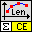
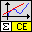
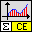
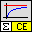
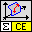

Owning Palette: CE Math
Calculus VIs
| Palette Object | Description | |
|---|---|---|
 |
[ce] Curve Length.vi | Calculates the curve length of a 1D function between start and end points. In addition, the VI allows specifying additional parameters and evaluating them in formula. |
 |
[ce] Differentiation.vi | Calculates both function values and the values of the derivative of 1D function defined by a formula. The VI allows specifying additional parameters and evaluating them in formula. |
 |
[ce] Integration.vi | Calculates both function values and the values of the integral of 1D function defined by a formula. In addition, the VI allows specifying additional parameters and evaluating them in formula. The VI uses an algorithm based on solving of ordinary differential equations with the help of the Runge Kutta method. |
 |
[ce] Limit.vi | Determines the left and right limits of a 1D function at the given point. |
 |
[ce] Partial Derivatives of f(x1,x2).vi | Calculates a 2D array of the partial derivatives of a function of two independent variables. The VI allows specifying additional parameters and evaluating them in formula. |